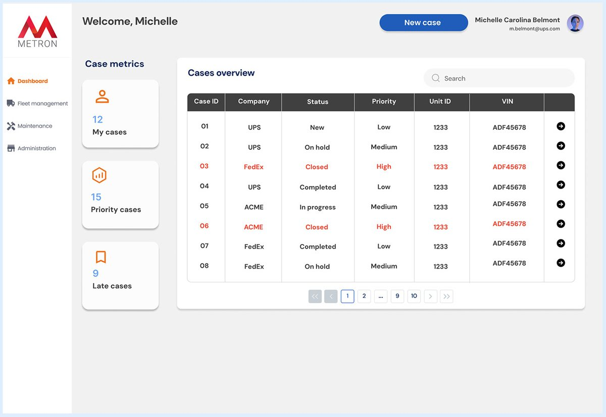
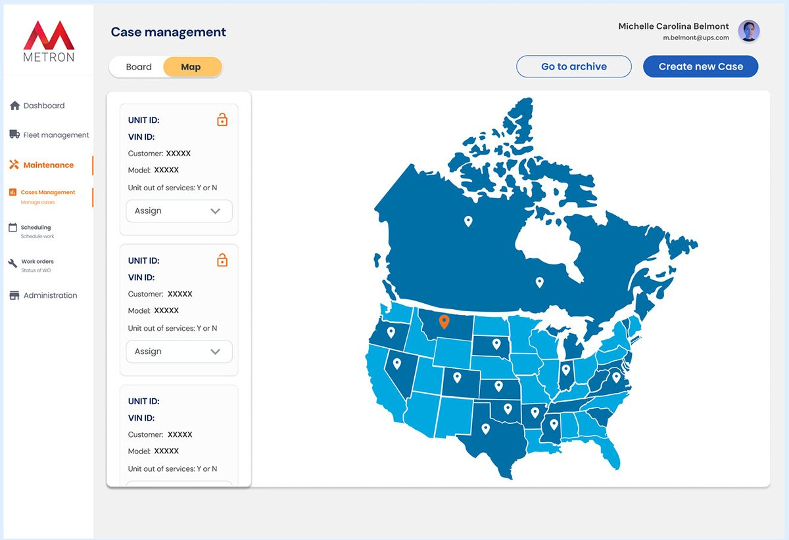
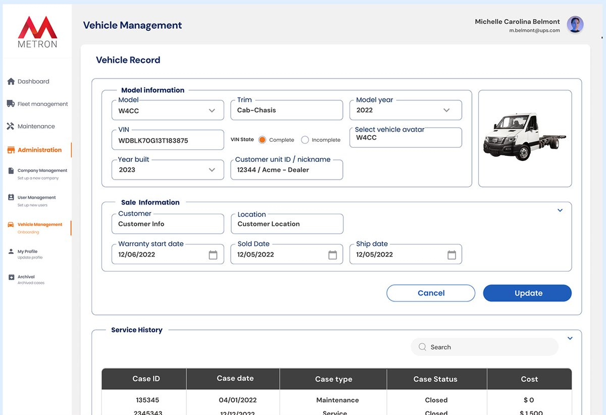
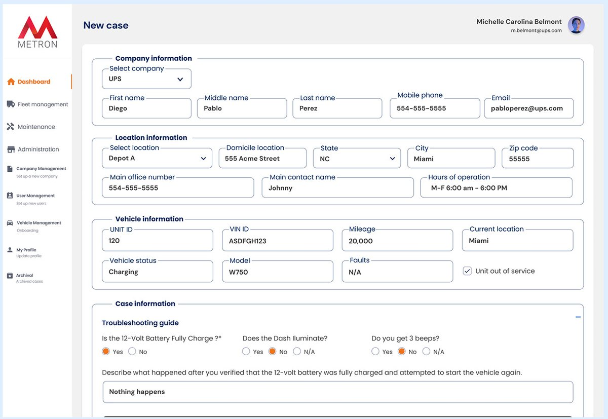
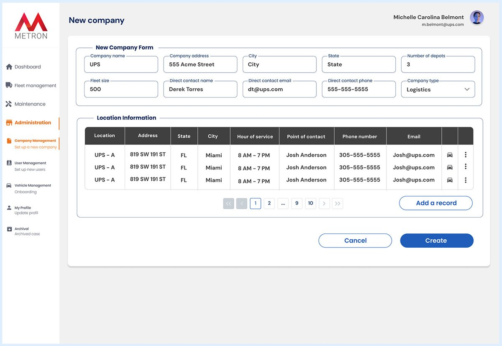
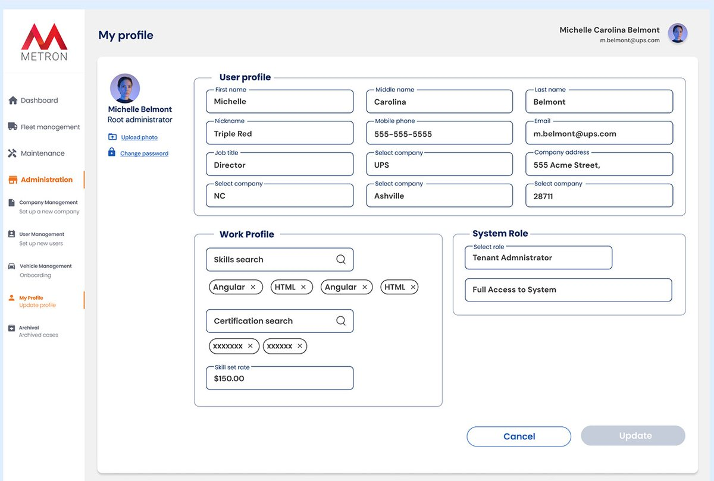

03EV fleet platform · RedesignPlataforma de flotas EV · Rediseño · 2022–24
WorkhorseWorkhorse
End-to-end redesign of Workhorse's platform for configuring and monitoring electric delivery trucks and managing fleets.
Rediseño end-to-end de la plataforma de Workhorse para configurar y monitorear camiones eléctricos de reparto y gestionar flotas.

Overview
Resumen
Redesign of the user experience of Workhorse's customizable electric truck platform and fleet management system. The goal was to improve usability, optimize configuration workflows and improve visibility of key fleet data for both technical and non-technical users. As the only Product Designer, I redesigned the platform from scratch.
Rediseño de la experiencia de la plataforma de camiones eléctricos personalizables y del sistema de gestión de flotas de Workhorse. El objetivo era mejorar la usabilidad, optimizar los flujos de configuración y dar visibilidad a los datos clave de la flota, tanto para usuarios técnicos como no técnicos. Como única Product Designer, rediseñé la plataforma desde cero.
Results
Resultados
The problem
El problema
The platform had grown in complexity over time: fragmented flows, inconsistent interfaces and steep learning curves. Fleet operators, technicians and administrators struggled to configure vehicles, interpret real-time data and manage alerts. In practice, users couldn't tell where the trucks were, which routes they were taking or whether they were being loaded; and when a truck broke down, they didn't know who was responsible for the repair, what the issue was or when it would be fixed.
La plataforma había crecido en complejidad: flujos fragmentados, interfaces inconsistentes y una curva de aprendizaje alta. Operadores, técnicos y administradores tenían dificultades para configurar vehículos, interpretar datos en tiempo real y gestionar alertas. En la práctica, no sabían dónde estaban los camiones, qué ruta hacían o si estaban cargando; y cuando un camión se rompía, no sabían quién era responsable de la reparación, cuál era el problema ni cuándo se iba a resolver.
Goals
Objetivos
Streamline truck configuration
Simplificar la configuración
Make it easier and faster to customize Workhorse EVs by simplifying complex technical choices and improving the step-by-step setup.
Hacer más fácil y rápido personalizar los camiones simplificando decisiones técnicas complejas y mejorando la configuración paso a paso.
A clearer fleet dashboard
Un dashboard más claro
Present real-time data more clearly so users can quickly monitor vehicle status, performance and alerts.
Mostrar los datos en tiempo real con claridad para monitorear rápido el estado, el rendimiento y las alertas.
A scalable design system
Un design system escalable
Unified UI components and patterns for consistency across the platform as the product evolves.
Componentes y patrones unificados para mantener la consistencia mientras el producto crece.
Discovery & research
Discovery e investigación
Direct access to end users was limited, so I combined heuristic audits (Nielsen's 10 heuristics), benchmarking of B2B platforms in logistics, fleet telematics and EV management, and stakeholder interviews with product managers, engineers and sales leads, plus insights from support. Key issues: no real-time feedback during setup, inconsistent components across modules, and users feeling “stuck” in configuration flows without the option to go back or save progress.
Con acceso limitado a usuarios finales, combiné auditorías heurísticas (las 10 heurísticas de Nielsen), benchmark de plataformas B2B de logística, telemática de flotas y gestión de vehículos eléctricos, y entrevistas con product managers, ingenieros y líderes de ventas, más insights de soporte. Problemas clave: falta de feedback en tiempo real durante la configuración, componentes inconsistentes entre módulos y usuarios que se sentían “trabados” en los flujos sin poder volver atrás o guardar el progreso.
Key findings → design decisions
Hallazgos → decisiones de diseño
- Fleet managers needed a simple way to configure complex settings → guided configuration with progressive disclosure and review before saving.Los fleet managers necesitaban configurar opciones complejas de forma simple → configuración guiada, con revelación progresiva y revisión antes de guardar.
- Vehicle health and location were critical → a dashboard prioritizing status, health, location and key operational information.La salud y la ubicación del vehículo eran críticas → un dashboard que prioriza estado, salud, ubicación e información operativa.
- Large amounts of information → a desktop-first experience with structured navigation and scannable data.Gran volumen de información → una experiencia desktop-first con navegación estructurada y datos fáciles de escanear.
- Users needed clear feedback → contextual guidance, validation states and actionable feedback.Los usuarios necesitaban feedback claro → guía contextual, estados de validación y feedback accionable.
- Visibility across vehicles and the whole fleet → an information architecture connecting fleet-level insights with vehicle details.Visibilidad de cada vehículo y de toda la flota → una arquitectura que conecta la vista de flota con el detalle de cada vehículo.
Proto-personas
Proto-personas
Michael, Fleet Manager
Michael, Fleet Manager
45, oversees 150+ electric delivery trucks. Uses the platform daily on desktop between meetings. Needs to monitor health and location at a glance. Addressed by the modular dashboard with smart filtering and prioritized alerts.
45 años, supervisa más de 150 camiones eléctricos. Usa la plataforma a diario en desktop entre reuniones. Necesita ver salud y ubicación de un vistazo. Lo resuelve el dashboard modular con filtros inteligentes y alertas priorizadas.
Carla, EV Technician
Carla, técnica de vehículos eléctricos
34, works in the field on a laptop or tablet tracking diagnostics, sensor data and service alerts. Needs clear prioritization and service history. Addressed by severity-based alerts and a centralized maintenance history.
34 años, trabaja en campo con laptop o tablet siguiendo diagnósticos, sensores y alertas de servicio. Necesita prioridades claras e historial. Lo resuelven las alertas por severidad y un historial de mantenimiento centralizado.
Case overview
Resumen de casos

- Problem
- Problema
- The previous dashboard was cluttered and users couldn't quickly tell which cases or vehicles needed attention.El dashboard anterior estaba sobrecargado y no se veía rápido qué casos o vehículos necesitaban atención.
- Decision
- Decisión
- A structured table with status indicators, sorting and filters, plus a clear navigation sidebar.Una tabla estructurada con indicadores de estado, orden y filtros, y una barra lateral de navegación clara.
- Why
- Por qué
- Fleet managers need to scan and prioritize at a glance.Los fleet managers necesitan escanear y priorizar de un vistazo.
Case management: map view
Gestión de casos: vista de mapa

- Problem
- Problema
- Users had no way to see where trucks were or what state they were in.No había forma de ver dónde estaban los camiones ni en qué estado.
- Decision
- Decisión
- A real-time map showing cases and vehicle status by location, next to a case list.Un mapa en tiempo real con casos y estado de los vehículos por ubicación, junto a la lista de casos.
- Why
- Por qué
- Location and health were the most critical information for fleet managers.La ubicación y la salud eran la información más crítica para los fleet managers.
Vehicle management
Gestión de vehículos

- Problem
- Problema
- Vehicle information was scattered, which made setup and follow-up hard.La información de cada vehículo estaba dispersa, lo que complicaba la configuración y el seguimiento.
- Decision
- Decisión
- A single vehicle record that brings together specs, configuration and service history.Una ficha única por vehículo que reúne especificaciones, configuración e historial de servicio.
- Why
- Por qué
- One source of truth per vehicle for technicians and managers.Una sola fuente de verdad por vehículo para técnicos y managers.
New case
Nuevo caso

- Problem
- Problema
- Creating a case involved a lot of information across multiple contexts.Crear un caso implicaba mucha información de distintos contextos.
- Decision
- Decisión
- A structured form grouping related information into clear sections, with a troubleshooting guide.Un formulario que agrupa la información relacionada en secciones claras, con guía de diagnóstico.
- Why
- Por qué
- A clear hierarchy made the workflow easier to scan and reduced cognitive load.Una jerarquía clara hizo el flujo más fácil de escanear y redujo la carga cognitiva.
New company
Nueva empresa

- Problem
- Problema
- Setup flows were long and confusing, especially for new users.Los flujos de alta eran largos y confusos, sobre todo para usuarios nuevos.
- Decision
- Decisión
- A form organized in labeled sections, with contact and location details grouped by topic.Un formulario organizado en secciones, con datos de contacto y ubicaciones agrupados por tema.
- Why
- Por qué
- Grouping related information reduces errors and supports the step-by-step approach.Agrupar la información relacionada reduce errores y acompaña el enfoque paso a paso.
My profile
Mi perfil

- Problem
- Problema
- Account settings were hard to find.La configuración de la cuenta era difícil de encontrar.
- Decision
- Decisión
- Personal data, work profile and system role grouped into clear sections.Datos personales, perfil laboral y rol en el sistema agrupados en secciones claras.
- Why
- Por qué
- Users manage their account without hunting through menus.Los usuarios gestionan su cuenta sin buscar entre menús.
What I delivered
Qué entregué
- End-to-end UX/UI flows for truck configuration, fleet management, vehicle details and operational workflows.Flujos UX/UI end-to-end para configuración de camiones, gestión de flota, detalle de vehículos y operaciones.
- High-fidelity responsive screens for fleet monitoring, vehicle status, configuration and management.Pantallas responsive de alta fidelidad para monitoreo, estado de vehículos, configuración y gestión.
- A reusable design system documented in Storybook and ReactCosmos.Un design system reutilizable documentado en Storybook y ReactCosmos.
- Prototypes, specs and handoff documentation, collaborating with engineering across agile sprints. I also ran sprint planning.Prototipos, specs y documentación de handoff, trabajando con desarrollo en sprints ágiles. También llevé la planificación de sprints.